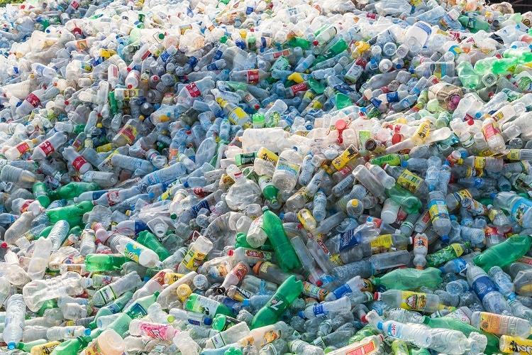

MWORIA KIRERIA
Acounting and finances
Unlike other materials, plastic does not biodegrade. It can take up to 1,000 years to break down, so when it is discarded, it builds up in the environment until it reaches a crisis point.
read more
ELIZABETH TATE
welcome to thiz website
Unlike other materials, plastic does not biodegrade. It can take up to 1,000 years to break down, so when it is discarded, it builds up in the environment until it reaches a crisis point.
read more
king
welcome to thiz website
Unlike other materials, plastic does not biodegrade. It can take up to 1,000 years to break down, so when it is discarded, it builds up in the environment until it reaches a crisis point.
read more